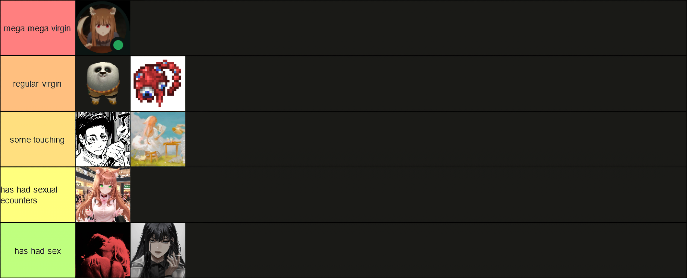
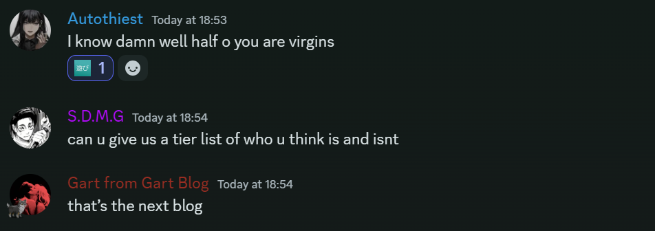

the virgin tierlist
october 12th 2024
this is the virgin tierlist. as you can see, i have created five seperate tiers, these being: mega mega virgin, regular virgin, some touching, has had sexual encounters, or has had sex.

click on this image!
×

this is the virgin tierlist
the reason why i have created this tierlist is because i have been thinking about the concept of virginity a lot recently. i have been thinking about how it is a social construct, and how it is a concept that is used to shame people. i have been thinking about how it is a concept that is used to control people and that they are not good enough. well, look, i'm here to say that you should feel that way as a virgin.

the reason the tierlist exists
now, to explain my reasoning behind the placement on tiers.
- savir savir sohal singh is in the "mega mega virgin" tier because of his immense addiction to gatcha titles, his religion-esque devotion to miHoYo, and the hentai addiction
- dre and prz find themselves in the "regular virgin" tier as i just think that's what they are, nothing against them, i think together they'd make a lovely couple
- harrison and theoden lysander are in the "some touching" tier, im not 100% clear on either of their statuses though. i remember mention of a chinese girl that harrison was talking to, so i know he has some game, and the rumours surrounding theoden are not good (e-sex)
- liam finds himself in the "has had sexual encounters" tier literaly just because he is married, and he must have done something with this spouse at some point
- and finally, me and riley are within the "has had sex" tier, as we have both had sex. nothing more to explain